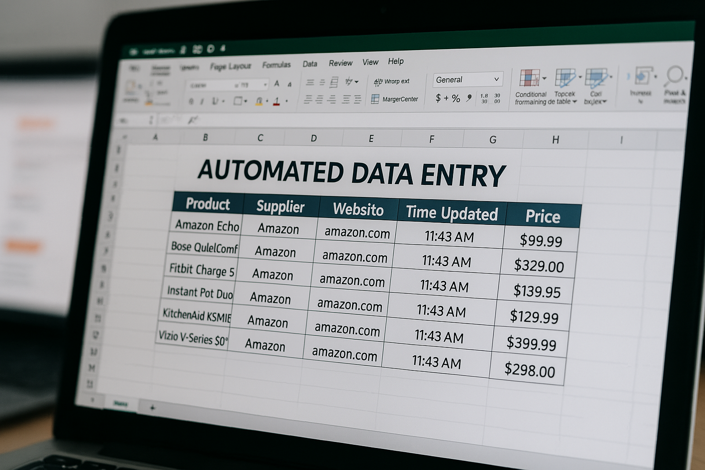

CRM Automations
Typical Use Cases
- Automated report generation
- Realtime notifications
- Third party data integrations
Benefits
- Save time on repetitive tasks
- Improve accuracy and consistency
- Increase team capacity
- Enable faster decision-making
Real Examples
- Notify sales managers in Slack when a high-value deal hasn’t been updated in 5 days in Salesforce
- Add demographic and phone connectivity status to leads from third party data providers

ERP Automations
Typical Use Cases
- Automated report generation
- Realtime notifications
- Data Validation
Benefits
- Save time on repetitive tasks
- Improve accuracy and consistency
- Increase team capacity
- Enable faster decision-making
Real Examples
- Generate certificates of conformance & shipping labels when a product is marked for shipping
- Flag mismatches between purchase orders, goods receipts and invoices

Data Entry & Extraction
Typical Use Cases
- Sync data between systems
- Ingest data from external websites
- Auto-validate manual entries
Key Benefits
- Cut manual entry
- Reduce errors
- Reduce data latency
- Save time
- Cleaner data
Real Examples
- Ingest product prices from supplier sites
- Automatically enter data from PDF into your CRM
- Generate excel files from data in your ERP, on customer websites and supplier APIs